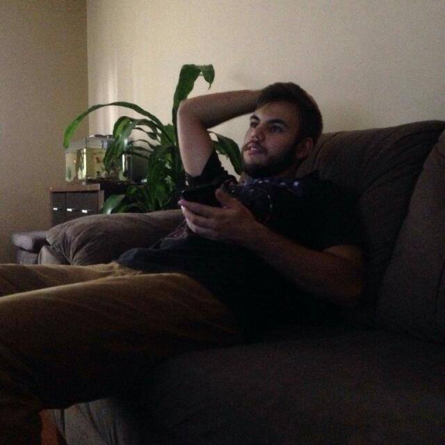

Eric Batista
Matemática Aplicada e Computacional
Matemática Aplicada e Computacional
Projeto desenvolvido na Semana Omnistack 8.0, consiste em um clone do Tinder para desenvolvedores, utilizando Node.js para o Backend, ReactJS para o Frontend e ReactNative para Mobile.
Projeto desenvolvido na MaratonaDev 8.0, consiste em um site para doação de sangue, utilizando Node.js para o Backend, HTML5 e CSS3 para o Frontend, e PostegreSQL para o Banco de Dados.
Projeto consiste em um clone da interface da Nubank, com a animação de push do menu, utilizando React Native e Expo.
Projeto consiste em um repositório de para o curso de Álgebra linear I e Álgebra linear II do curso de Matemática Aplicada e Computacional, utilizando Python e Manim para criar animações e LaTeX para escrever os textos.